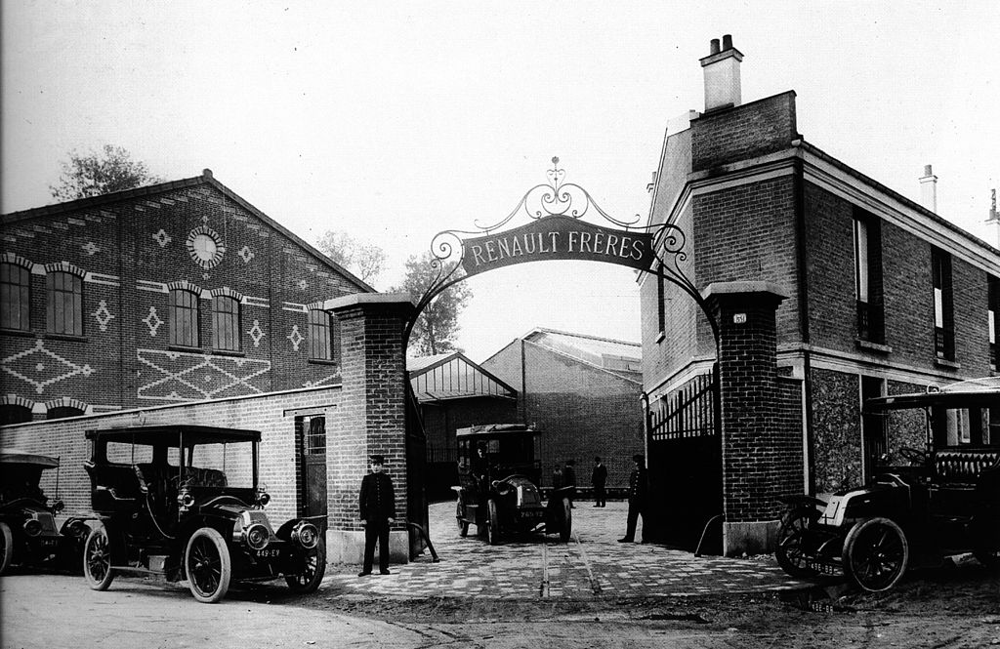
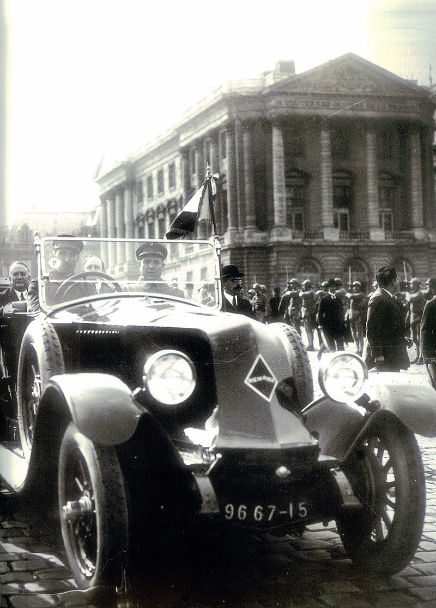

Historia Renault
O grupo Renault foi fundado em 25 de fevereiro de 1899 pelo industrial francês Louis Renault, seus irmãos Marcel e Fernand e seus amigos Thomas Evert e Julian Wyer, pioneiros da indústria automobilística[12] e introdutores do taylorismo como forma de organização do trabalho na França.
O primeiro carro Renault, a Renault Voiturette 1CV, foi vendida a um amigo do pai de Luís, depois de lhe dar um passeio de teste em 24 de dezembro de 1898. Os irmãos rapidamente perceberam a publicidade que poderiam atrair pela participação dos seus veículos em competições automobilísticas, e alcançaram rápido sucesso e reconhecimento nas primeiras corridas de cidade a cidade na França.
Tanto Louis quanto Marcel Renault competiram com modelos de sua fábrica, porém Marcel morreu em um acidente de carro durante uma corrida de Paris a Madrid em 1903. Além dele, outros 15 competidores foram vítimas de acidentes, obrigando os organizadores a cancelarem a corrida. Apesar de Louis Renault não ter mais competido após isso, sua empresa continuou envolvida em competições. A Renault venceu corridas com o modelo AK 90 CV e foi vencedora do primeiro Grand Prix da história em 1906. Em 1909, Louis toma o controle total da empresa após a morte de seu outro irmão, Fernand.